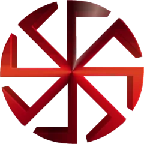

Хто ми
Family Castro — сімʼя, де залишаються ті, хто грає на результат і піднімає її імʼя.
Рівень — це коли ти корисний сімʼї щодня, а не «інколи».
Порядок. Дисципліна. Сила. Тут усе про нас: кодекс, керівництво, штаб у Вайнвуд-Хіллз, карта розвитку та автопарк сімʼї.
Структура, дисципліна й повага до сімʼї. Тут цінують дії, а не слова.
Family Castro — сімʼя, де залишаються ті, хто грає на результат і піднімає її імʼя.
Рівень — це коли ти корисний сімʼї щодня, а не «інколи».
Принцип CastroПрацюєш на сімʼю — сімʼя працює на тебе.
Лідер і заступники: стратегія, кадри, економіка та контракти. Натисни на картку, щоб побачити деталі.
Визначає напрямок Family Castro та фінально координує найважливіші рішення сімʼї.
Підтримує порядок усередині складу та контролює активність учасників.
Розвиває стабільні джерела доходу та контролює фінансові процеси Family Castro.
Координує виконання контрактів і стежить, щоб задачі доводилися до результату.

Один з найкращих особняків Сан-Андреаса: велика територія, огляд і контроль. Точка збору для виїздів, брифінгів, підготовки до війни сімей і контрактів.
Поведінка на базі: повага до структури, без токсика і метушні.
Логотип Castro натхненний коловратом — символом, який у сучасній словʼянській традиції повʼязують із рухом сонця, циклічністю та внутрішньою силою. Гострі лінії та зібрана геометрія роблять його знаком дисципліни, контролю й статусу.
Нейтральні, нелегальні та майбутні напрямки покращень сімʼї. Натисни на вузол, щоб побачити умови.

CASTRO Тип розвитку:НелегальнийПреміум, тактичний і електро-сегмент. Кожне авто закріплене за рангом, стоїть на базі й доступне для виїздів.
 ×3з 7 рангу
×3з 7 рангуГіперкар • 4-місний Mega GT
 ×3з 4 рангу
×3з 4 рангуLuxury GT • статусний виїзд
 ×3з 5 рангу
×3з 5 рангуTactical SUV • силовий сегмент
 ×1з 3 рангу
×1з 3 рангуTactical SUV • силовий сегмент
 ×4з 1 рангу
×4з 1 рангуElectric Utility Truck • швидкі переїзди
Власний застосунок сімʼї для Windows. Бінди, звіти, Е-бали, зміни й автопарк ТК — з колеса F8 поверх GTA, без згортання гри і без Discord у фоні.

Кадри з життя сімʼї. Натисни, щоб відкрити на весь екран — далі гортай стрілками або свайпом.
Заповни анкету кандидата — керівництво розгляне її та запросить на співбесіду.